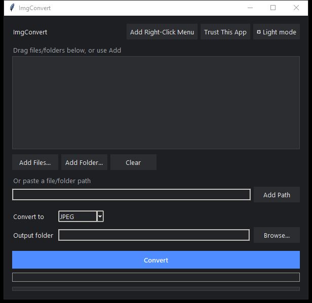

Convert images in a click. Keep them private.
A tiny, portable image converter for Windows. Drag files in, pick a format, done — HEIC to JPG, PNG, WebP, GIF and TIFF, with no installer, no ads and no telemetry.
Single ~21 MB .exe · Windows 10/11 · MIT licensed



Small tool, no strings attached
Built around one idea: a utility this small shouldn’t need an installer, an account or a subscription.
Private by design
Never makes a network request. No telemetry, no analytics, no update checker — your images stay on your machine.
Portable single .exe
About 21 MB. No installer, no admin rights, nothing to set up. Run it from anywhere.
Right-click “Convert To”
Add an Explorer menu per format; output lands next to the original. Per-user only, removable any time.
HEIC friendly
Turn iPhone HEIC photos into universal JPEGs, with EXIF orientation fixed so nothing is sideways.
Batch & drag-and-drop
Drop files or whole folders. Progress bar and a per-file log; one bad file never stops the batch.
Light & dark themes
Clean, native-feeling interface that follows your preference.
Supported formats
Convert between any of these in batches. The browser demo covers the formats browsers can encode.
| Format | Windows app: read | Windows app: write | Online demo: write |
|---|---|---|---|
| JPEG / JPG | ✔ | ✔ | ✔ |
| PNG | ✔ | ✔ | ✔ |
| WebP | ✔ | ✔ | ✔ |
| GIF | ✔ | ✔ | — |
| TIFF / TIF | ✔ | ✔ | — |
| HEIC / HEIF | ✔ | ✔ | — |
How it works
Four steps, no learning curve.
- Add images — drag files or folders onto the window, use Add Files / Add Folder, or paste a path.
- Pick a format — JPEG, PNG, WebP, GIF, TIFF or HEIC from the Convert to menu.
- Choose where to save — defaults to a
converted/folder next to your first file. - Click Convert — watch the progress bar; failures are listed, the rest still run.
Frequently asked questions
Does ImgConvert upload my images?
No. It runs entirely on your computer and never makes a network request. There is no telemetry, analytics or update checker. The online demo also converts locally in your browser tab.
How do I convert HEIC to JPG on Windows?
Drag your HEIC files into ImgConvert, choose JPEG from “Convert to”, and click Convert. Orientation is corrected automatically.
Why does Windows SmartScreen warn me?
The exe is signed with a self-signed certificate rather than a paid public-CA certificate. On a new PC click “More info” → “Run anyway”, then use “Trust This App” in the app header to import the embedded public certificate for your account.
Is it really free?
Yes — MIT licensed, ad-free, no paid tier. The code is a single readable file: imgconvert.py.
How do I remove the right-click menu?
Run ImgConvert.exe --uninstall-context-menu. It only ever wrote to your user registry hive.